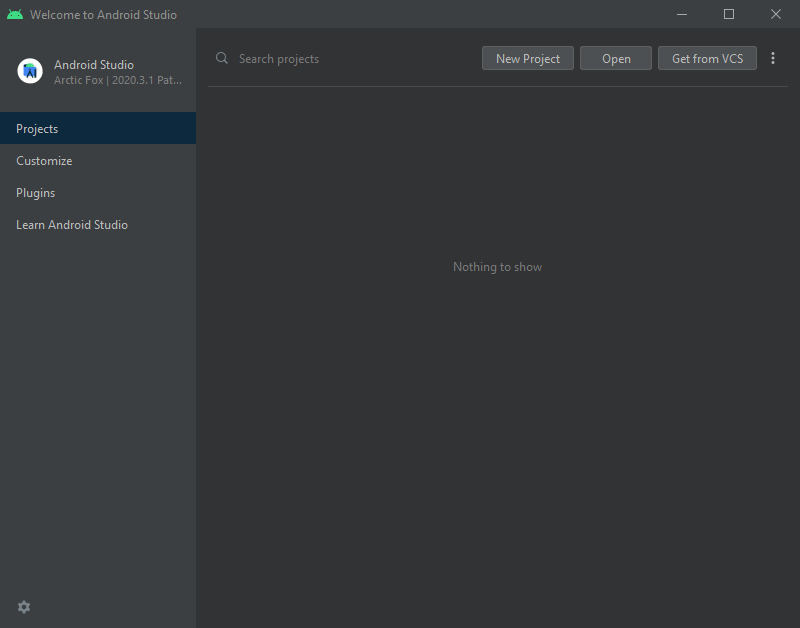
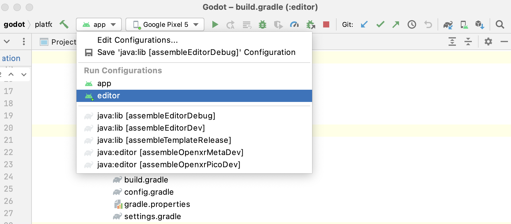
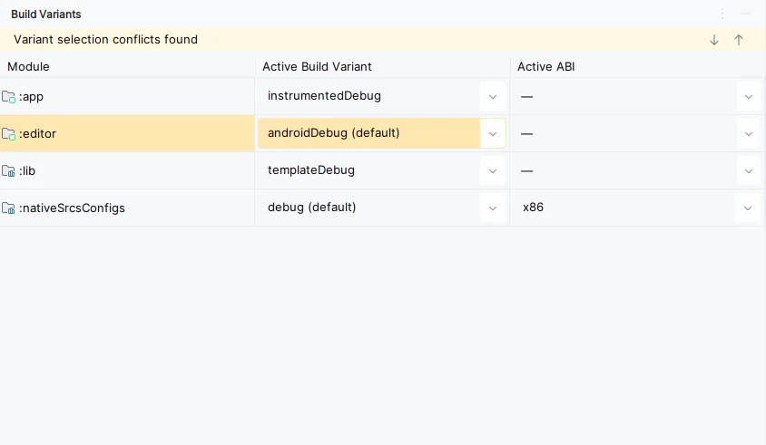
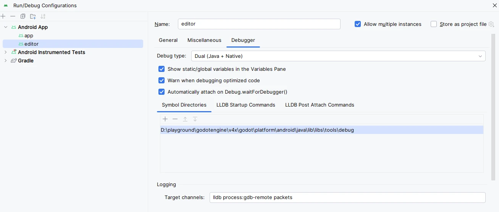
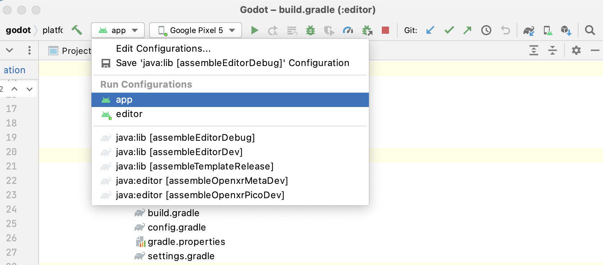
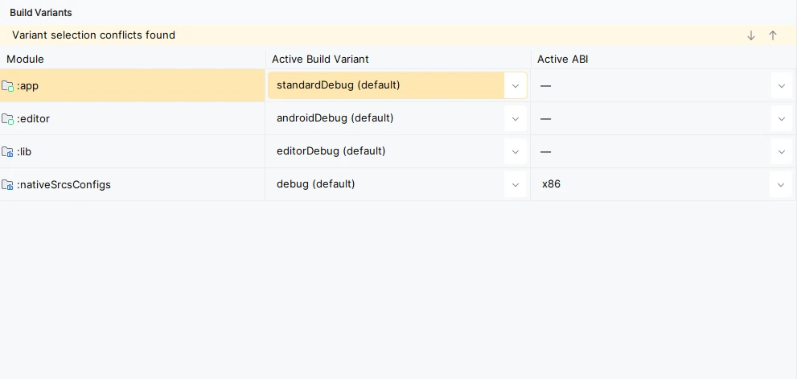
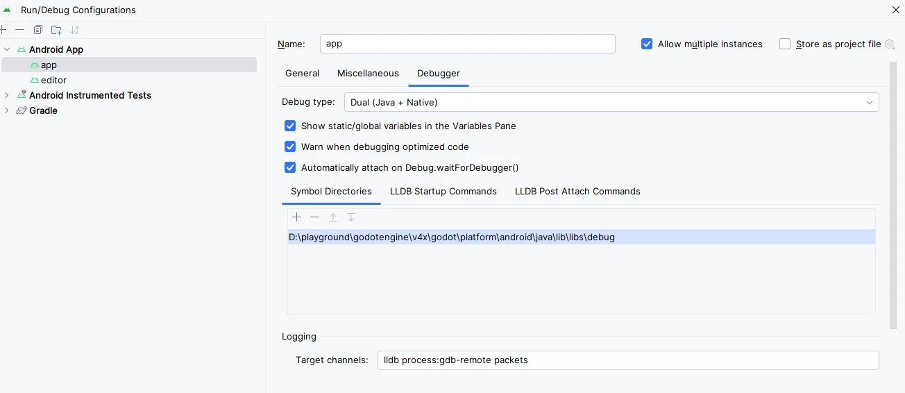

Android Studio
Android Studio is a free IDE for Android development made by Google and JetBrains. It's based on IntelliJ IDEA and has a feature-rich editor which supports Java and C/C++. It can be used to work on Godot's core engine as well as the Android platform codebase.
Importing the project
From the Android Studio's welcome window select Open.

Android Studio's welcome window.
Navigate to
<Godot root directory>/platform/android/javaand select thesettings.gradlefile.Android Studio will import and index the project.
Android Studio project layout
The project is organized using Android Studio's modules:
lib module:
Located under
<Godot root directory>/platform/android/java/lib, this is a library module that organizes the Godot java and native code and make it available as a reusable Android library.The generated Godot Android library is made available for other Android modules / projects via MavenCentral, along with its documentation.
editor module:
Located under
<Godot root directory>/platform/android/java/editor, this is an application module that holds the source code for the Android and XR ports of the Godot Editor.This module has a dependency on the lib module.
app module:
Located under
<Godot root directory>/platform/android/java/app, this is an application module that holds the source code for the Android build templates.This module has a dependency on the lib module.
Building & debugging the editor module
To build the
editormodule:Select the Run/Debug Configurations drop down and select
editor.

Select Run > Run 'editor' from the top menu or click the Run icon.
To debug the
editormodule:Open the Build Variants window using View > Tools Windows > Build Variants from the top menu.
In the Build Variants window, make sure that in the Active Build Variant column, the
:editorentry is set to one of the Debug variants.

Open the Run/Debug Configurations window by clicking on Run > Edit Configurations... on the top menu.
In the Run/Debug Configurations window, select the
editorentry, and under Debugger make sure the Debug Type is set toDual (Java + Native)Click the
+sign under the Symbol Directories section, and add theplatform/android/java/lib/libs/tools/debugdirectory.

Select Run > Debug 'editor' from the top menu or click the Debug icon.
Building & debugging the app module
The app module requires the presence of a Godot project in its assets directory (<Godot root directory>/platform/android/java/app/src/main/assets) to run.
This is usually handled by the Godot Editor during the export process.
While developing in Android Studio, it's necessary to manually add a Godot project under that directory to replicate the export process.
Once that's done, you can follow the instructions below to run/debug the app module:
To build the
appmodule:Select the Run/Debug Configurations drop down and select
app.

Select Run > Run 'app' from the top menu or click the Run icon.
To debug the
appmodule:Open the Build Variants window using View > Tools Windows > Build Variants from the top menu.
In the Build Variants window, make sure that in the Active Build Variant column, the
:appentry is set to one of the Debug variants.

Open the Run/Debug Configurations window by clicking on Run > Edit Configurations... on the top menu.
In the Run/Debug Configurations window, select the
appentry, and under Debugger make sure the Debug Type is set toDual (Java + Native)Click the
+sign under the Symbol Directories section, and add theplatform/android/java/lib/libs/debugdirectory.

Select Run > Debug 'app' from the top menu or click the Debug icon.
If you run into any issues, ask for help in Godot's Android dev channel.